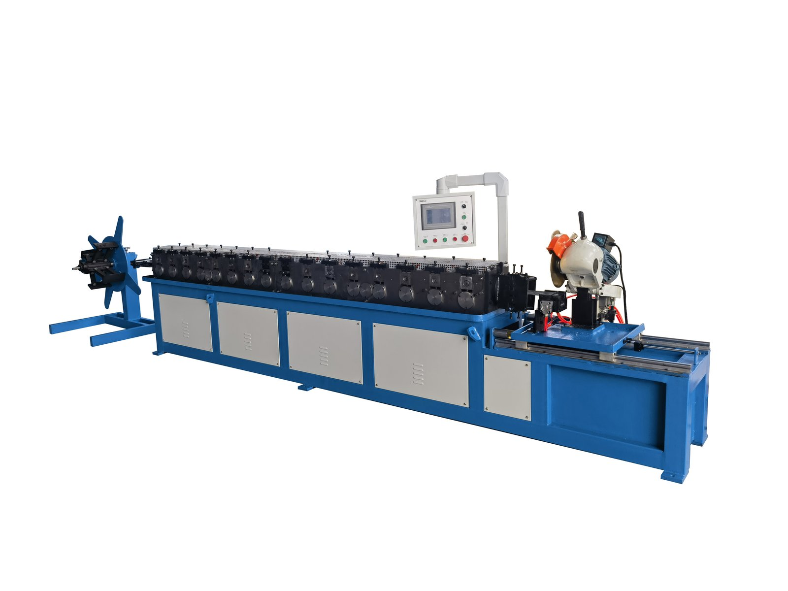
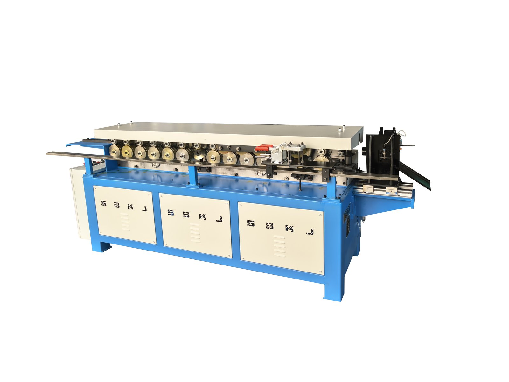
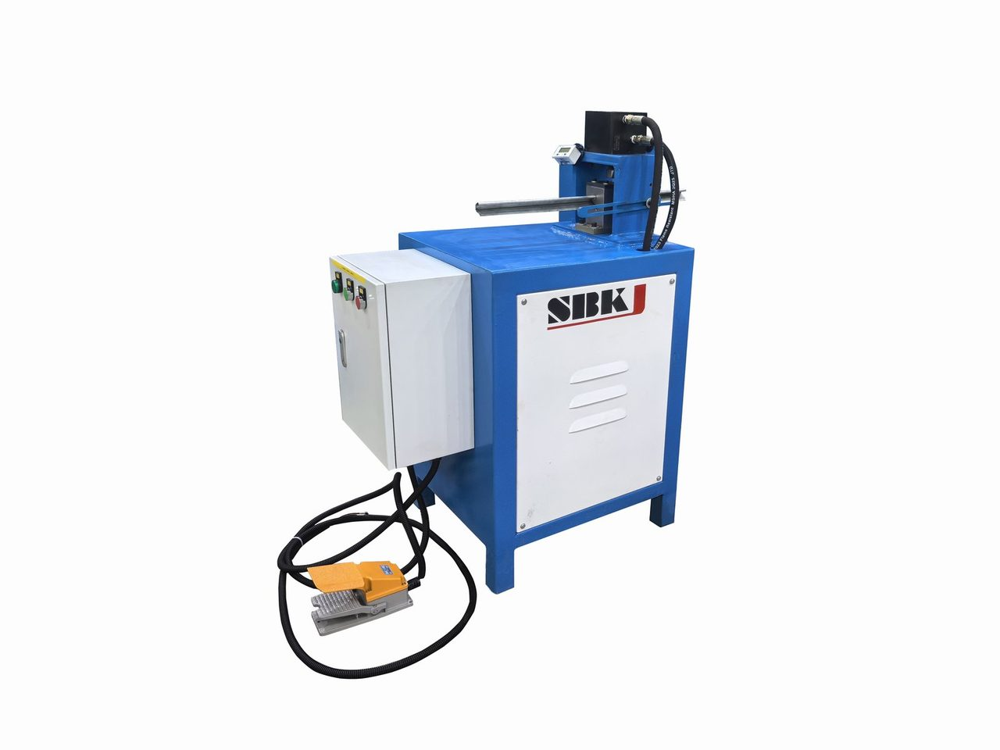
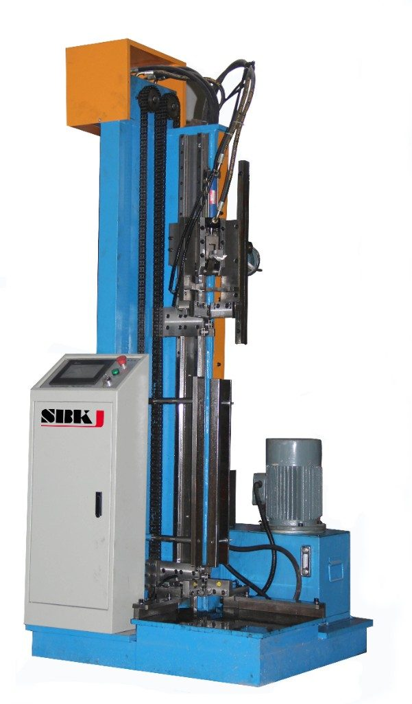
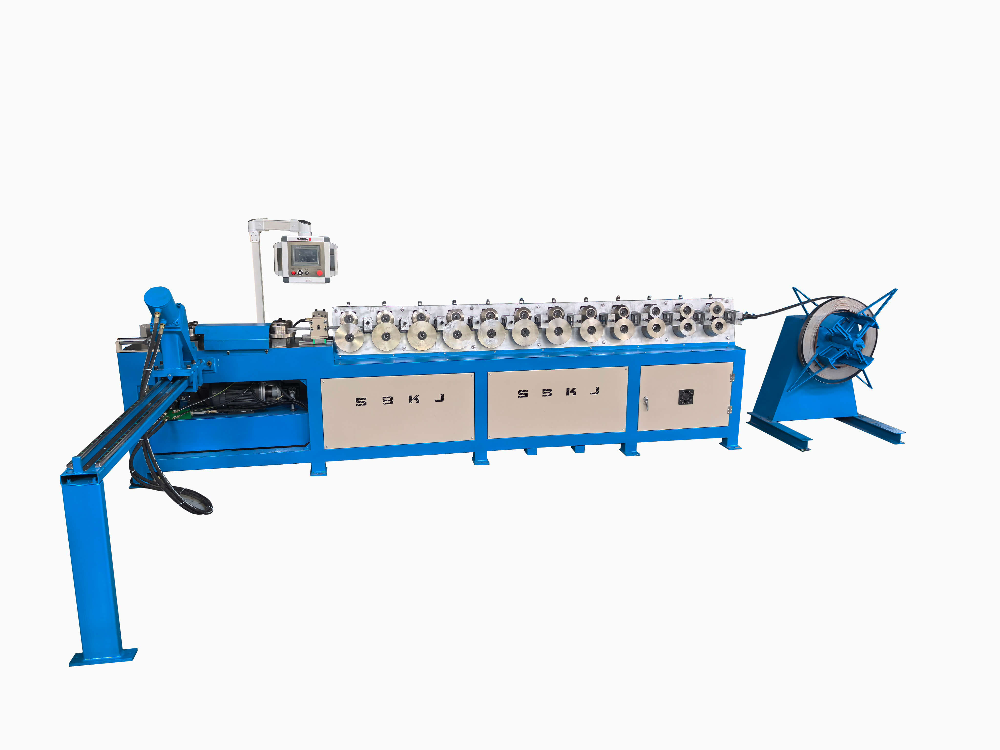
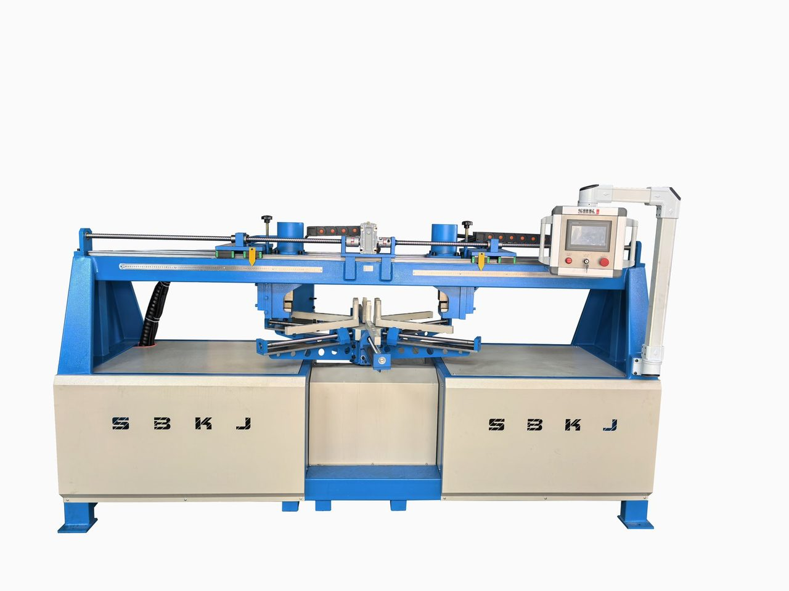
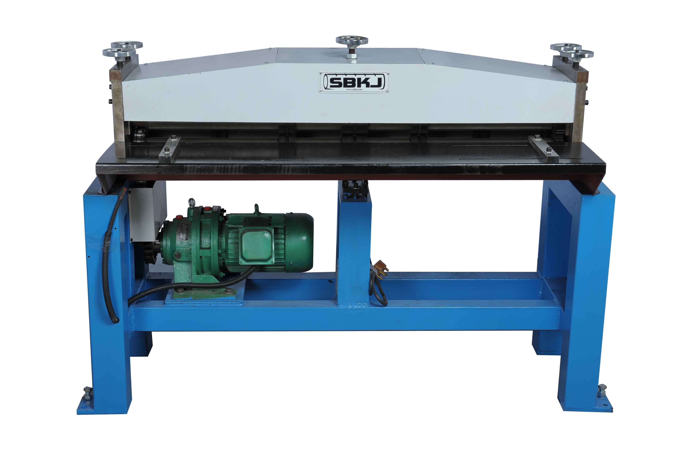

Connectors, seams and flanges
TDF Flange, Lockformer and Duct Seam Closing Machines
Standalone machines for TDF flange forming, Pittsburgh lock seams, cleat closure, round flanges and duct zipper seam closing.
Overview
This category covers the standalone seam, flange and connector machines that sit alongside a fabrication line or inside a manual duct shop. The TDF (Transverse Duct Flange) system has become the dominant connector style on rectangular HVAC duct because it is faster to assemble on-site than traditional angle-iron flanges and uses less material. Taokron builds TDF flange forming machines, TDF cleat cutting machines, TDF hand folders and combined duct-zipper/TDF seam closers so your shop can produce and close the full TDF system end-to-end. Alongside TDF we manufacture the SBLC-series Pittsburgh lockformer, the SBHF-I duct zipper (seam closer) for rectangular duct, the SBYFL-50 round flange forming machine for spiral duct, and auxiliary grooving, beading and cleat cutting machines. Buyer profile: contractors whose specification requires TDF connectors, manual duct shops upgrading closure speed, and spiral duct producers who need to add round flanges as a separate operation.
Machines in this category
Click any machine to view full specifications, video and datasheet.

TDF Flange Forming Machine
Roll-forms integrated TDF flange on duct edges

TDF Connector Flange Forming Machine
Standalone connector profile

TDF Hand Folder
Manual TDF corner folder

TDF Cleat Cutting Machine
Cuts TDF closure cleats to length

Lockformer (SBLC Series)
Pittsburgh lock & cleat forming

Cleat Cutting Machine SBKT-12
Dedicated cleat/strip cutter

Seam Closing Machine SBHF-I (Duct Zipper)
15 m/min rectangular duct seam closer

Duct Zipper (TDF) SBHF-1.5x1500TDF
Combined zipper + TDF flange closer

Snail Seam Closing Machine SBWKHFJ-45
Snail-type seam closer

Round Flange Forming Machine SBYFL-50
Φ80-1250 mm round flange forming

Round Flange Punching Machine SBYFL-50-1
Punched-hole round flange

Grooving Machine
Rolls grooves for reinforcement
Specifications at a glance
Compare the flagship models in this category. Full specifications are on each individual product page.
| Machine | TDF Flange | Lockformer SBLC | SBHF-I Duct Zipper | SBYFL-50 |
|---|---|---|---|---|
| Forming type | Roll-forming | Roll-forming | Progressive seam roll | Roll-forming |
| Max thickness | 0.5-1.5 mm | 1.5 mm | 1.2 mm | 2-4 mm |
| Max width / diameter | 1,500 mm | 1,500 mm | 1,500 mm x 1,500 mm | Φ250 mm min |
| Speed | 8 m/min | 12 m/min | 15 m/min | variable |
| Motor power | 2.2-4 kW | 1.5-3 kW | 4 kW | 7.5 kW x 2 |
How to choose
Start from your specification: if the project drawings call for TDF-25 or TDF-30 connector profiles, you need a dedicated TDF flange forming machine. If the drawings instead show Pittsburgh lock or button-punch seam, the SBLC-series lockformer is the primary machine and you can skip TDF. Next, look at duct closure: the SBHF-I duct zipper is the fastest way to close a rectangular duct seam after forming — it runs 15 m/min and pairs naturally with either a lockformer shop or an SBAL line. For spiral round duct, add the SBYFL-50 flange forming machine so your spiral pipe leaves the shop with flanges already attached. Finally, a TDF cleat cutting machine and hand folder are low-cost additions that eliminate on-site cleat-cutting and let installers close corners without a mobile saw.
Standards and compliance
SMACNA HVAC Duct Construction Standards (seam types & leakage), EN 1507 (TDF rectangular duct), AS/NZS 4254. TDF system is recognised under SMACNA for pressure classes up to 1500 Pa with appropriate gauge selection.
Frequently asked questions
What is TDF flange and why is it replacing angle iron?
TDF stands for Transverse Duct Flange — an integrated flange rolled directly on the duct edge from the same sheet. It replaces the old practice of welding or bolting angle iron to each duct end. TDF is faster on-site (a typical joint closes in under a minute with four corner cleats) and uses ~30% less material per flange, which makes it the default on most modern HVAC specifications.
Can I retrofit TDF flange forming to an existing auto duct line?
If you already run an SBAL-V or SBAL-III and did not originally specify inline TDF, yes — we can supply a standalone TDF flange forming machine that runs as a second station. Retrofitting inline TDF to an existing line is more invasive and is evaluated case by case; often the standalone route is faster and cheaper.
Do I still need a lockformer if I have a TDF machine?
Usually yes. TDF handles the duct connector joint, but the longitudinal seam along the duct wall is still typically closed with a Pittsburgh lock — which requires a lockformer. The two machines are complementary, not alternatives.
What's the difference between duct zipper and seam closing?
They are the same category — 'duct zipper' is the common English shop-floor name for a progressive seam-closing machine that runs along an open Pittsburgh lock and closes it in one pass. SBHF-I is Taokron's standard model at 15 m/min.
Workshop integration patterns
TDF and lockformer machines are second-stage stations on a rectangular duct workflow. The TDF flange former produces the transverse duct flange that is now the dominant connection method for commercial HVAC duct globally; the lockformer produces Pittsburgh seams, S-cleats, and drive cleats for longitudinal seam closure and accessory connections. On a fully integrated SBAL-V auto duct line both stations are in-line with the cut-to-length shear, so there is no separate handling step. On a manual or semi-auto workshop they are stand-alone stations operated by a single trained operator. Taokron supplies both configurations and matches the right one to your existing workshop layout.
Buyer playbook
TDF and lockformer buyers are usually existing duct shops upgrading from older stand-alone equipment, or new shops buying their first set of stations. The decision pivots on production volume and integration: low-volume shops are well-served by a stand-alone SBTDF and SBLC pair operated manually, mid-volume shops upgrade to servo-driven stations with PLC control, and high-volume shops integrate the same tooling into an SBAL-V auto line. Taokron stocks the full range and the migration path between them is straightforward because the tooling profiles are identical across the range.
Related categories
Buyer's guides & pricing
Comparing suppliers or budgeting a line? These vendor-neutral guides name the real manufacturers and give realistic 2026 price ranges.
Ready to specify your line?
Send us the project brief — Taokron engineers respond within 12 hours with a sized quotation and GA drawing.
Get a quotation in 12 hoursPrice request
Ask for a quotation
Tell us what you make, the duct sizes and where the machines will run. A Taokron engineer replies within 12 hours with a sized quotation and a layout drawing.
Quotation for: TDF Flange, Lockformer and Duct Seam Closing Machines
Several machines or a complete duct line? Use the full inquiry form
Page reviewed by Taokron Engineering & QA · Last verified